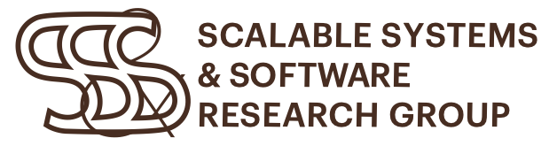
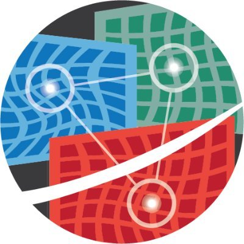
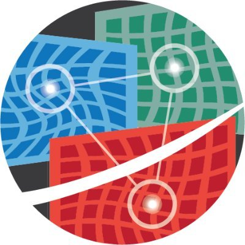

Teaching
|
   
|
Spring 2021
Fall 2020
Spring 2020
Fall 2019
Spring 2019
Fall 2018
Spring 2018
Fall 2017
|
|
Previous Experiences
|
|
-
-
-
-
Roberto Palmieri, PhD -- he/him/his
Assistant Professor
Computer Science and Engineering
Lehigh University
Building C 338
phone: +1 (610) 758-3623
email: "palmieri" at "lehigh" dot "edu"
-
-
-
Recent News:
- - I will be co-charing the Program Committe of SRDS 2021 along with Yvonne-Anne Pignolet. Consider to submit and attend! - I will be co-charing the Program Committe of PaPoC 2021 along with Heidi Howard. PaPoC is colocated with Eurosys. Consider to submit and attend! - Our paper "Bundled References: An Abstraction for Highly-Concurrent Linearizable Range Queries" has been accepted as poster paper at PPoPP 2021. Congrats Jacob! - Serving as Local Organizer for ACM SPAA 2021 in Philadelphia, USA. - Invited to serve as Program Committee member of Usenix ATC 2021. Consider to submit and attend! - Invited to serve as Program Committee member of Eurosys 2021. Consider to submit and attend! - Our paper "Performance Evaluation of the Impact of NUMA on One-sided RDMA Interactions" has been accepted at SRDS 2020. Congrats Jacob! - Our paper "On Reading Fresher Snapshots in Parallel Snapshot Isolation" has been accepted as poster paper at ICDCS 2020. Congrats Masoomeh! - Invited to serve as Program Committee member of ACM PODC 2020. Consider to submit and attend! - Invited to serve as Program Committee member of USENIX ATC 2020. Consider to submit and attend!
-